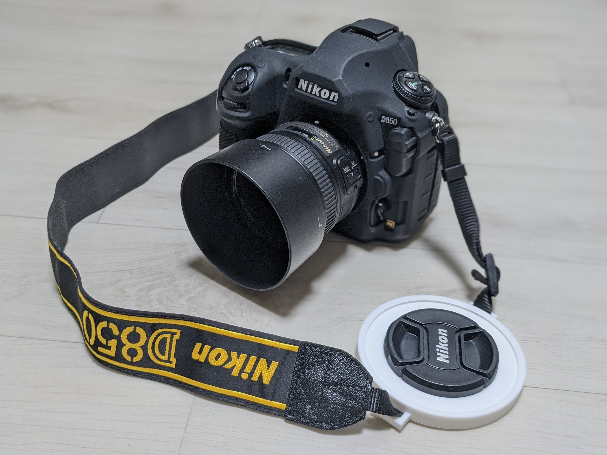
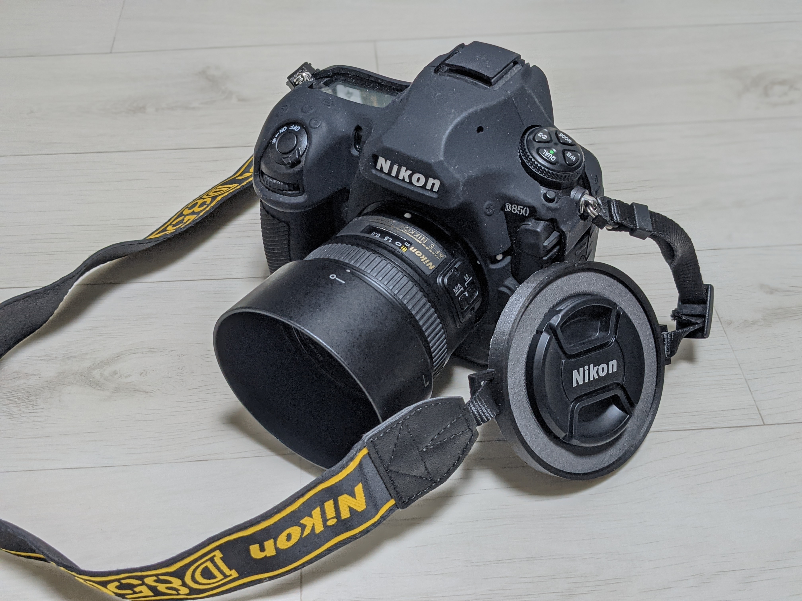

Lens cap holder Generator
Lens cap holder Generator builds a 3D model of lens cap holder which exactly fits to all lenses you have.
You can 3D print it for your camera!
If you have any questions or ideas, feel free to contact: mail@luftaquila.io
Examples
Click photo to enlarge.



Usage
TL;DR: Select your lenses' filter thread, Click Generate!, Wait, Click Generate STL, Click Download STL, Print!
- Select all of your lenses' cap diameter in Options. It is equal to lens' filter thread.
- Open and configure advnaced options if needed. You can ignore advanced options in general.
- Click Generate!
- Processing, please wait... will displayed at the bottom of the preview window.
Wait until rendering is finished. Rendered model will be displayed.
It can take few minutes depending on computer's performance.
- Click Generate STL, then click Download STL.
- Bring generated stl file to your 3d printer and print it!
Recommended print options are:
- Layer height: <= 0.2mm
- Support generation: Touching buildplate only
- Infill density: < 20%
Notice: Check your model's actual size before print it. It must be
- length: largest cap diameter + strap margin + 14 mm
- width: largest cap diameter + (cone slope * 2) + 4 mm
- height: (number of caps * 2.5) + 4 mm
Options
Preview
Codes
Lens cap holder Generator uses JSCAD to render OpenSCAD script and display preview, export into STL file.